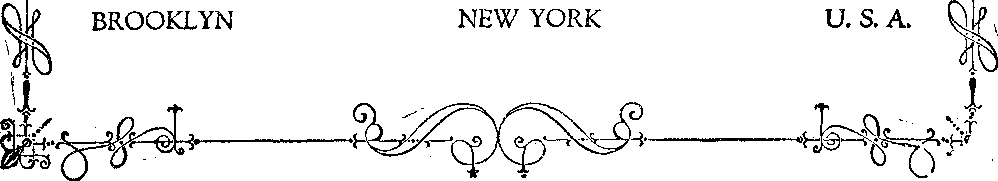

a Journal of fact
l~$5
A MODEL PRAYER
ARCHAEOLOGY IN
WESTERN LANDS
FORCIBLE VOTING IN AUSTRALIA
BLESSINGS IN
THE MILLENNIUM
ALUMINUM DISHES AND DRUGS
Vol. VIII Bi-Weekiy No.
October 6, 1926
VOFLLO BEGINNING.
OLD ’VORLD DYING
S0 a copy — $'100 a Year
Canada and Foreign Countries $ 150
»a=r- ------------......... ... ' Iir^rn-.—....... .........:■ .
Labor and Economics What the World is Doing ............ . , .
Items Regarding the Use of Anthracite
Social and Educational Why Parents Love their Own Children Best
The Spartan Mother (Poem) .........
Finance—Commerce—Transportation Los Angeles and San Francisco Ports Compared .
Political—Domestic and Foreign
Curious Conditions in Congress
Agriculture and Husbandry Conditions in Scott, Mississippi
Science and Invention "Scientists” Flaunt the Almighty
Home and Health Cheerful News fob the Meat-Eaters
Travel and Miscellany Archaeology in Western Lands.............
Religion and Philosophy Enroute Abound the World ...........» . * . .
Jesus Never in India ........... ,
Blessings fob the People During the Millennium ......
Studies in "The IIahp of God” . .
Published every other Wednesday at 18 Concord Street," Brooklyn, N. Y„ U. S. A., by WOODWORTH, HUDGINGS & MARTIN,
Copartners and Proprietors Address: IS Concord Street, Brooklyn, N. T„ U. S. A. CLAYTON J. WOODWORTH . . . Editor ROBERT J. MARTIN . Business Manager WM. F. HUDGINGS . . Sec’y and Treas.
FIVE Cents a Copy—?1.00 a Year Make‘Remittances to THE GOLDEN AGE Notice to Subscribers: We do not, as a rule, send a card of acknowledgment for a renewal or for a new subscription. A renewal blank (carrying notice of expiration) will be sent with the journal one month before the subscription'expires. Change of address, when requested, may be expected to appear on address label within one month. Foreign Offices : British ..... 84 Craven Terrace, Lancaster Gate, London W. 2 Canadian ......... 38-40 Irwin Avenue, Toronto, Ontario Australasian....... 495 Collins Street, Melbourne, Australia
South African......6 Lelie Street, Cape Town, South Africa
Entered as second-class matter at Brooklyn, N. Y., under the Act of March 3, 1879 crtw Golden Age
------------. ------------------
Volume Vil! Brooklyn, N.Y., Wednesday, Octobers, 1926 Number 184
BETHLEHEM Steel employes earning $1,500 a year or less are paid benefits_pf $10 a week, in case of sickness or death, for a period of one year, if they have worked for the company five years, or benefits for four years, if they have worked for the company twenty years. Those whose earnings are more are paid bene-, fits of $12 per week for similiar periods.
Argument in Favor of High Wages
IN AN address before the New England Bankers Association, Lewis E. Pierson, prominent in banking circles and in the United States Chamber of Commerce, said, “High production, high wages and high consumption are the cardinal principals of modern American industry; and throughout the world today American industry is competing with the industries of other countries which are proceeding on the theory of low production, low wages and low consumption.”
United States Encourages Militarism
ACCORDING to John Nevin Sayre, head . of the National Committee on Militarism in Education, the United States is now the most militaristic country. It has taken the lead in establishing military training in schools and colleges. Russia, Japan and Mexico are. following the American example and using the course of the United States as an argument for militarizing their youth.
Federal Reserve Not Taking Chances
IT IS apparent to every visitor to the Federal Reserve Bank building in New York City that no one around there is taking any chances. Every visitor is watched by armed men. The gold reserve of the country is kept in a vault
, the walls of which are of steel ten feet thick. The only entrance is through a slot in a vertical cylinder the weight of which is ten tons. Even beyond the cylinder there are other gates and bars protecting the gold.
OF THE $353,000,000,000 estimated wealth of the United States, about $1,000,000,000 are invested in Asia, $2,000,000,000 in Europe, $2,600,000,000 in South America, $2,500,000,000 in Canada, and $1,500,000,000 in Mexico and Central America. The wealth is increasing so rapidly that despite lowering of taxes on a large scale in the last fiscal year, the government had a surplus of $400,000,000 at the end of the year. The national income is put at about $70,000,000,000. One-third of the total wealth is in the land or mineral deposits, one-third in structures, and one-third in personal effects which can be moved around.
TXTHAT with plaster falling on him in the ’ ’ White House and in his church and in the theatre where he went to worship after the church ceiling was found insecure, matters look as if the fates had it in for Mr. Coolidge. And it looks even more that way, politically. With Iowa, North Dakota and other western states turning away from him and with the exposures of corruption in Pennsylvania, it looks like hard sledding ahead for the present standard-bearer of the Republican party.
"PHILADELPHIA has a church built of grindstones, which had first served their time in the making of saws in that city. More than 2,500 grindstones were used’in building the church. Thousands more were used in building a retaining wall several blocks long. Philadelphia has one of the largest saw-making establishments in the world.
TTP UNTIL the first of August all the eastern part of the United States complained of a cold, backward summer, while the western part of the country found it warmer than usual. The cold belt stretched back from the Gulf Coast aiid the Atlantic seaboard about one thousand mjles, following the shore line with remarkable accuracy at that distance. The edge of the cold belt just included Santa Fe, Fort Smith, St. Louis, Chicago, Green Bay and Marquette. West of those cities it was warmer than usual throughout the spring and summer months.
Necessity for Reducing Hours of Work
THE Chamber of Commerce sees the necessity for further reductions in hours of work. It calls attention to the fact that while the growth in population is only about sixteen percent above that of 1913, yet facilities for manufacture have increased thirty percent, and a capacity for production exists which is beyond America’s ability to consume. There is an argument here also in behalf of higher wages and smaller profits. Unless the workers are paid good wages they cannot buy the surplus that can be produced.
FOR the first year since the automobile began . to claim its victims 1926 shows thus far fewer killed than in the previous year. The improvement is small but encouraging. The number killed is standing stationary at about 24,000 per year. Even this amount is a goodsized city in itself.
Thousands Slain in Pennsylvania Battle
IN THE battle for their daily bread in the state of Pennsylvania during the past ten years 24, 699 human beings lost their lives while at work, or suffered injuries which caused their death. In the same state, in the same period, there were 1,811,982 non-fatal accidents. These figures do not include domestic servants or agricultural workers.
Sanitary Survey of Mines of Alabama
HDHE United States Government Sanitary sur-' vcy of the Coal Mines of Alabama discloses that eighty percent of the coal-mining towns of Alabama have no sidewalks, none have any sewers, less than half have improved streets. Mine-company houses have leaky 'roofs, bad floors and walls often papered with only newspapers. Methods of garbage handling are inadequate; the average town has no bathhouse ; tuberculosis among the workers is prevalant.
The Camden-Philadelphia Bridge
TUST at present the Camden-Philadelphia ^ bridge has the longest span of any suspension bridge in the world. It is 1,750 feet between the towers, and in total length is 1. 82 miles. The cables, thirty inches in diameter, support the roadway 135 feet above the river. The width of the bridge is 125 feet. Its cost was $33, 000, 000. It was built in four and one-half years. The bridge is constructed so as to carry the load if packed solid with trolley cars, electric trains and automobiles. The bridge was formally opened July 4th, 1926.
Philadelphia-Washington Air Service
'PHILADELPHIA is advertising as one of her standard attractions this summer a very good air service to Washington. Ten planes are employed. The trip between the two cities, which lie 135 miles apart, is made in an hour and a half. The fare one way is $15; round trip $25. The planes carry mail as well as passengers.
li/TRS. Cyrus H. McCormick, Jr., recently made the run from New York to Chicago, 908 miles, via the Pennsylvania Railroad, in what is said to be record time between the two cities, namely 16 hours, 55 minutes. For some time the Pennsylvania had a train which made the trip regularly in eighteen hours. The present time of the Broadway Limited is. twenty hours. Mrs. McCormick left New York at 5:48 p. m. and reached Chicago the next morning at 9:43. It is estimated that the cost of the special was ovex’ $7,000.
Curious Conditions in Congress
as
OWING to the effective disfranchisement of southern Negroes and to the failure to make a reapportionment every ten years, called for by the Constitution, the curious fact is pointed out that whereas the city of Los Angeles, California, cast more votes for President in 1924 than Georgia, Alabama and Mississippi qombined, yet those southern states have thirty representatives in Congress while Los Angeles has two.
FARMERS are paying a large part of the expense for building roads that other people wear out before the bonds are paid. They are building union schoolhouses, which no doubt are nice to have but which boost taxes to points where the farmer cannot meet the conditions. In 1920 the mortgage indebtedness of the farmers of the country was $3,500,000,000, but today it is $12,250,000,000. It is claimed that the condition of the farmers throughout the country is much worse today than it was five years ago. In view of the prosperous condition of the country as a whole it must be very apparent that the farmer is not getting an adequate share of it. :
Carpholite Discovered in Texas '
CARPHOLITE, said to be the excrement of extinct animals and worth great sums as fertilizer, has been discovered near San Antonio, Texas. The deposit, which is in the form of green sand, is said to be in a layer forty feet thick and covering at least 100 acres. It is said to run about twelve percent potash and twenty-seven percent iron oxide. Besides being a rich fertilizer, the carpholite is said to be an excellent water purifier.
EXPERIMENTS in West Ham, a suburb of
London, have disclosed the fact that the movies are an aid to the insane. Patients are now allowed to dress in street clothing and to go to the movies in the neighborhood of the hospital. They observe good order and give evidence of being benefited by contact with other people and by the dramas and humorous films seen.
The Sound of Clenching the Hand .
WHEN a stethoscope is applied to the hand, and the sound of clenching is amplified, the noise made is said to sound like the running of a tractor over a tin roof. The muscles of the arm and the wrist give forth a sound like a steam roller going into action, while the beating of the human heart sounds like the bell on a Big Ben alarm clock in its distinctness.
Washing the Cinders out of Smoke
AT THE Edison plant in New York City, where 4,000 to 6,000 tons of coal per day are burned, one hundred tons of cinders and dust that otherwise would be thrown out into the air for New Yorkers to breathe and for New York housewives to clean up, are every day washed out of the smoke ascending from the great chimneys. The ascending smoke is forced through a tank of water which cleanses it of its dust content.
Artificial Rosewood and Mahogany
IN THE Maine forests, near Machias, the work of turning beeches into rosewood and yellow birches into mahogany goes merrily on. The results are said to defy the detection of even expert lumbermen. The dyes, which are the invention of a German chemist, are said to dye a large tree completely in four days; and the results are permanent. The inventor claims that the dyes do not injure the trees. Any desired shade of color may be had. The work is being carried on under the direction of the University of Maine.
HOUSEWIVES are gradually losing their jobs. Bread, beans, pies, cakes, doughnuts, are seldom made at home any more but are produced in great factories. They are good and cheap.
STRANGE as it may seem, one of the most nutritious of soups may be made from potato peelings, which have first been carefully cleaned of all blemishes. The peeling of the potato contains several of the mineral elements which the human body needs. These are lost when the potato is peeled. The best way to prepare potatoes is to bake them.
Condensed Recipe for Long Life
T ESS food. More water. Active bowels. ; Young companions. Industry. Warm feet.
Cool head. Neat clothes. Slow up. Don’t worry.
OFF the coast of California are large quantities of seals and sealions, protected by the state. Occasionally they get overly friendly with small craft in their vicinity. The other day fifteen of them climbed upon a twenty-two-foot power launch without asking the owner’s consent, and sent his vessel down to Davy Jones’ locker. This happened at Santa Monica bpaeh.
BECAUSE his parents objected to having their nine-year-old boy forced to salute the flag in a school in that city, a judge in Bellingham, Washington, has issued a permanent order taking the child away from its-parents. The child is kept in a detention home. His parents have been refused permission to see him, and he is being compelled to salute the flag regularly. “My country, ’tis of thee, sweet land of liberty, of thee I sing.”
IN MEXICO’S new penal code there are severe penalties incurred by priests of foreign birth if they hold religious services in Mexico; all education is made secular; monasteries and convents are disbanded and must not reassemble; minors must not be induced to join such orders; priests cannot criticize laws or acts of authorities orally or by printed literature, nor organize political parties, nor hold political meetings in churches. Outside the churches neither priests nor nuns may wear religious garb. They may not acquire or administer property or - capital. They may not open new churches without permission from authorities. The pope wants Catholics everywhere to pray for a change of these orders of the Mexican government, which he alleges are “hypocritical forms of pretended legality”. He also objects to the enforcement of these orders, resulting, as they do, in frequent ejectment from the country of priests or nuns who have violated these laws. The penal code still permits prayers.
f"\NCE the world was afraid that a few misguided fanatics who call themselves anarchists would upset Christendom. Today it knows that the most powerful group of anarchists on earth is masquerading under the name of religion. In Mexico this group has deliberately tried to destroy all law and order by using its influence to bring the Mexican government to its knees. The manifesto of the anarchists openly declared that it sought to produce a complete paralysis of social and economic life so that the government may be compelled to submit to its demands. There are still wilder times ahead for Mexico, and the ecclesiastical anarchists are responsible.
COMMENTING upon Mexico’s recent legislation on religious matters, the Seattle Union Record observes:
That the Roman Catholic church in the days of it? power in Mexico never granted one iota of that liberty to others for which it now pleads for itself; that the Roman Catholic church used its power to acquire immense estates, estimated at the time of the reforms of 1859 to amount to at least one-third of the entire republic, and that it never used this power in any adequate fashion for the education and advancement of the peons over whom it had almost absolute control,' and finally that down to the present the church generally has sided with the great landlords and concessionholders against the masses of the people.
Mr. Charles E. Hughes, ex-Secretary of State of the United States, and one time candidate for president on the Republican ticket, has been paying an extended visit to Rome, where he has been in frequent conference with a Mr. Ratti, better known as the pope and sometimes called-“His Holiness” by some who should know better. Mr. Hughes is one of the cleverest politicians in the United States; and Mr. Ratti, before he was elected pope, was conceded to be one of the cleverest politicians in Europe. No one can blame these two politicians for getting together, and no one can blame the common people for wondering what deal is on now for which eventually they will be called upon to pay the bills.
THE pope, whose income even in 1870, when the last budget was published, was some $650,000,000 a year, is now said to be a little short of spending money, owing to the fact that not so much revenue was made from off the pilgrims to Rome in 1925 as had been anticipated. Since 1870 the pope has issued no financial statements. All power is in his hands to use in any way he sees fit whatever money comes to him. The pope’s gardeners are said to get a wage of fifty cents a day; but the “Cardinal’s Special” which carried the “princes” to the Chicago circus last June, was the most extravagant railway train ever built. It cost millions.
THE press carries a copy of a cablegram sent by the pastor of a Baptist church in Newport, Kentucky, to the pope at Rome, in which the pastor, W. B. Harvey, said:
Your invitation through Cardinal Bonzano to Protestant America to return to the Catholic Church is rejected for the following and other reasons: We will not surrender our national independence, our public schools, free speech, free press, religious liberties and our Bibles, which our forefathers fought and died and won for us. In turn Protestant America invites you to accept Jesus Christ as your Savior and come back to the Bible. If you cannot accept our invitation, then you must cease meddling in American politics,
A ROMAN Catholic religious association in Washington, D. C., offers to lay certain petitions at the foot of St. Anthony’s statue provided the petitioners will promise to give a certain sum of money if St. Anthony comes across with the thing desired. But it is intimated that Anthony may fail to deliver the goods. This arouses the suspicion that Anthony himself never sees the money but that somebody else gets it, and that that is why he fails. Sounds reasonable.
THE Nation calls attention to the fact that whichever way one looks the outlook for the common people is not good. The Japanese arrest 300 Koreans who want independence, the French and Spanish whip Abd-el-Krim, the Druses are being destroyed, the Egyptians dare not seat as premier the one whom they elected to the place, while Uncle Sam is as far from granting independence to the Philippines as he was twenty years ago.
The Probity of the Red Man
MR. H. Woodman, a white man, the son A.VX of a physician, lived much of his life among the Indians of New Mexico. He is authority for the statement that over five hundred treaties were made between the Indians and white settlers up to 1873, and not one,of them was first broken by an Indian. A promise was kept at all costs, even a promise to return to a post to be executed.
WHAT men will do for money is being shown up by action taken by the United States government in Oklahoma to protect a family of the Osage Indians from extermination. White men who coveted the riches of one of the wealthy Osage families started a campaign of extermination and had actually slain thirteen members of the family, some by shooting, some by poison and some by bombing, when the government stepped in. In one instance a jailor granted a four hours’ leave of absence to a prisoner so that he might explode One of the bombs, which killed three persons.
Massachusetts means blue hills;
Schenectady, beyond the pines; Ontario, rocks standing in the water; Niagara, the neck; Canada, big village; Detroit, bend in the river; Kalamazoo, stones in the water; Michigan, large lake; Milwaukee, beautiful land; Iowa, sleepy place; Mississippi, father of waters; Missouri, yellow river; Pueblo, people of many villages; Chicago, wild onion.
Woman Suffrage Among the Indians
FROM earliest times the women of American Indians enjoyed equal rights with the men in the selection of tribal chieftains and in the formation of laws. In some of the tribes the nominations for chief were made only by the women. In some tribes they nominated three men who. made the final selection. Any chief could be removed for cause. At a council meeting any man or any woman could bring up any subject for discussion by the tribe.
TT WAS from the North American Indian that the white man learned the value of Indian corn, white potatoes, sweet potatoes, tomatoes, maple syrup, maple sugar, cranberries, celery, oysters, popcorn, succotash, hominy, scrapple, corn pone and hard-shell clams. He was the inventor of the snow-shoe, birchbark canoe, moccasin, cornhusk mattress, feather duster, willow basket and the most wonderful of blankets. He Was the first man to eat and enjoy pumpkin pie.
IN THE language of the Indian a day was a sun, a year was a great sun, a month was a moon; January was cold moon; February, hungry moon; March, awakening moon; April, grass moon; May, planting moon; June, rose moon; July, heat moon; August, thunder moon; September, hunting moon; October, traveling moon; November, beaver moon; December, long night moon.
SOUTH America is rapidly coming to the front. For four years seaplanes have maintained a ten-hour service from Bogota to the Pacific Coast without a single accident. The planes are navigated by German aviators. The trip, which is 800 miles in length, was formerly broken up into several short railway and steamer trips and consumed ten days. Colombia produces ninety percent of all the emeralds found in the world.
ALESMEN of the largest department store in London visited the United States during
August to study American methods of buying and selling goods.
TIE New Republic, referring to the unseemly haste of the Conservatives in the House of Lords to get away from debate on the mining question so that they might attend their evening social engagements, says:
There is often a time in the history of revolutionary movements when the sheer effrontery of the ruling class puts a final and unendurable strain on the patience of those who suffer under their oppression and inefficiency.
The French noblesse gave notable instances of this insolence of privilege before it went to the guillotine or over the Ehine. The British aristocracy has always shown its wisdom in refraining from such provocative behavior, but last week’s proceedings in Parliament suggest the moment of madness with which the gods anticipate their vengeance. The peers who ostentatiously put the pleasures of their own dinner tables before the consideration of the case of the starving miners may have occasion to remember one Foulon, who told the starving people of Paris to go and eat grass.
T T NDER the above title The Nation contains a heart-rending account of an incident in France during 1915. A French mechanician desiring a pair of new trousers refused to don a pair of dirty blood-spattered trousers just stripped from the body of one who had been killed. His Colonel called a court-martial at which he also presided, excluded all evidence except that of the complainants, and then had the man officially murdered. The case will now be reviewed, but that will not bring the murdered man back to life.
HOSPITAL service by plane is maintained in the northern part of Sweden and Norway. Doctors visit remote districts by this means and in some instances bring patients back for treatment in hospitals. A German physician recently ordered a person suffering from concussion of the brain to be sent home by airplane, 300 miles; not merely because it was quicker but because the patient would thus suffer less from shock and vibration than by any other means of travel. '
ONDEMNED by society to dress and loot? like a beetle, poor man' is now rebelling;
and at last, even in Vienna, men have appeared on the streets in shirt waists and without any coats. Some day they may even come to have the same rights, as human beings, which the women already freely enjoy.
AUSTRIA seems to be in much better condition than at any time since the war. The currency has been stabilized, the budget has been met, the financial system has been overhauled, and the revenues have increased. Vienna, which is governed by Socialists, has just opened in a working class district what is admitted to be the finest bath house in Europe.
All Italians Must Pay the Fascisti
ALL Italians in Italy must pay for the support of the Fascisti, regardless of whether they belong to any of the fifteen recognized associations into which the people of the country have been divided, and whether they like it or not. In effect this will cause a huge stream of wealth to flow into the coffers of the Fascisti and help to fasten this octopus securely about Italian necks.
All Italians Must Work or Starve
LONG with the doing of things which few can admire Mr. Mussolini certainly does some things which awaken admiration. He has now issued a proclamation in which he declares that it is treason for the unproductive rich, their sons and their mistresses, to utilize the wealth of the nation for their own luxury; and implies that they are in for a rude awakening. He classes them with tramps, vagabonds, paupers, thieves and idiots. It is not his intention to include the clergy in this class just yet, as, for the present, such loafers are quite useful to his purpose.
Italy Greatly Improved in Many Ways
0 ONE can deny that in the matter of material improvement Italy has greatly flourished under its dictator. There are better sanitation, water supply and drainage. Cities are cleaner, health rates better and hospitals the best. Factories are working full time and more factories are springing up. Trade is increasing. Beggary has ceased. Roads are perfect. The people are well fed. The government banks have quadrupled their resources. It is admitted that Mussolini is spending nothing on himself, which is one reason for his great power with the people.
Dividing Another Man’s Property
ABYSSINIA, for some reason or another, seems to object to the agreement between Italy and Britain whereby, according to an Abyssinian paper, these two nations are deliberately dividing between themselves economio rights which belong not to them but to Abyssinia. All three of these nations are members of the League of Nations, and Abyssinia is now wondering of just what value it is to belong to the League anyway, especially when a stronger nation wants your property. Abyssinia has asked the League for permission to import modern arms, so that it may defend its rights.
AAA
Unusual Weather in Italy
TTALY has been experiencing unusual weather conditions during this past season. At a time wThen the country is usually dry, there have been frequent and prolonged rains. In some places there have been unusual showers of ants and butterflies. These are not unknown at other times, but have been larger this year than before. Snow has been deep in the Alpine valleys.
Economic War Against the Whites
WRITER in the New Palestine says:
In Eastern Asia the Chinese are quickly, and the
Indian slowly, supplanting European and American competition; and as on the Pacific Coast the yellow men are rapidly turning from coolies into merchants and into manufacturers, and even into millionaires, a similar process prevails in the modernized Moslem Orient. Here it is only in its very genesis, being more advanced in India and Egypt; it is until today hardly observable in Tripoli, Iraq, Palestine and Morocco; but everywhere the economic competition against the white race or the Christian is being prepared. Eastern Asia and Soviet Eussia will be the allies of Islam in this subterranean war of which little is written and less is thought.
ONE modem freight train of fifty cars will carry as much freight as about 10,000 camels laden with 400 pounds apiece, which is . all they usually bear. Today, m every great city of America, hundreds of trains of fifty cars each arrive and leave. The camel must go. It is already going, even in the lands where it has been used from time immemorial. The auto is being used now for crossing desert wastes with a speed, staying qualities, carrying capacity, ease and comfort of travel which the camel never had.
IN NUMBER 170 of the Golden Age we presented some Htems on Archaeology”, applied to Africa and Asia. They attracted much interest; and we append further items on the Same subject, applied to Europe and America, •merely reminding our readers at the outset that the earlier settled continents of Africa and Asia are naturally the chief fields of archaeological interest. '
There is a reason for the oft-repeated proverb, “Westward the course of empire takes its way.” It is because the peoples of earth have moved westward and taken their empires along with them. Secular no less than Biblical history attests the fact that Europe was settled from Asia, and Greece was the first of the European countries inhabited.
The archaeological treasures of Greece are considered so important that forty American colleges have united their plans and resources for systematic work in Athens, where buildings worth a million dollars will be removed in order to permit the uncovering of classical treasures known to exist twenty-five to thirty feet beneath the surface. Digging will begin next year.
In the city of Corinth, rebuilt from its ruins in B. C. 46 by Julius Csesar, there has recently been uncovered the wall of an arena built under his direction, which shows a number of paintings beautifully done by fine artists, all in an excellent state of preservation.
Prof. Rhys Carpenter, head of the Department of Archaeology of Bryn Mawr College, near Philadelphia, Pa., was so fortunate as to ’discover about two years ago, on a lonely windswept island off the coast of Spain, the site of the Greek city of Hermoskopeion, the first Greek settlement in Spain. The location of the city had been lost to history for two thousand years.
IN THESE days science, so-called, is obliged frequently to reverse itself. Tradition told us that Rome was founded by twin brothers, Romulus and Remus, who, abandoned by their mother, were reared in babyhood by a she-wolf which had lost her own offspring. Along came science, which denied the possibility of this, and even questioned whether any such boys ever existed. But in digging deeply under the Emperor Domitian’s palace recently a number of clay tablets were found, sketched with a stylus, on one of which the outlines of Romulus and Remus being fed by a she-wolf were easily discernible.
Rome, like Athens, is a treasure house for archaeologists, and it has been built within times sufficiently recent so that som^ of its ancient objects of interest still exist in a fair state of preservation. Part of the Tiber bridge which IToratius defended in the sixth century B. C. is still in use.
But the center of archaeological interest in Italy is Pompeii, buried in 80 A. D. by a tremendous shower of black ashes belched forth from Vesuvius in the greatest eruption it has ever had. This came upon the city while it was in the heat of an election campaign, throbbing with life.
At first the digging into these ruins was done by the old pick and shovel methods; but about ten years ago these gave way to the more tedious but much more valuable methods of Spinazzola, by which all articles, even the fibers of fabric, are uncovered and photographed while in position.
Pompeii was a bustling, up-to-date city. The ruins show that the merchants changed their signs frequently. The signs were in bright colors and of great variety. Huge quantities of election posters have been found. A public laundry had just been completed when it was overwhelmed with the ashes.
A Roman soldier, on guard at the gates, was found standing at his post, just where he was placed before the rain of ashes began. In some places walls are frescoed with drawings and paintings which are in the highest degree indecent, showing the low moral condition of the people.
RCHAEOLOGISTS hope some time to find in Moscow the library of Ivan the Terrible, who is known to have buried there eight hundred volumes of priceless Arabian, Persian, Assyrian and Byzantine manuscripts. The Soviet government is searching for these books, w’hich have now lain buried for about four hundred years. Ivan hid the library so that it would not fall into the hands of his enemies.
What is supposed to have been an important archaeological find off the coasts of Esthonia in the Baltic Sea, consists of a quantity of seaweed-covered granite blocks. It is probable, however, that these are merely relics of the days of Peter the Great. That savage monarch refused to let any ship come into the port of St. Petersburg unless it brought a partial cargo of stones wherewith to help build the city. Probably some ship captain bound for that port found it necessary to throw some granite blocks overboard.
In Bulgaria an immense vase has been discovered, made of solid gold. The vase, which is in eleven parts, the largest 10J inches in diameter, weighs over thirty pounds. The vase is of Oriental appearance and is regarded by archaeologists as having historical value. We presume that it was intended for or stolen from the ancient Russian royalty regime.
There have been recent discoveries of large quantities of British coins of the time of Ethel-red (tenth century) at various points in Norway and Denmark. These discoveries afford support for the historical evidence that one of the favorite pastimes of the Norsemen was to make raids on England and hold up its sovereign for a good lot of cash, as a bribe to them to go away and stay away and keep their friends away. Stealing was as favorite a pastime of the strong and the greedy in 926 as it is in 1926. But the bankers, the Vikings of today, use lawyers instead of rowboats to help them get away with their ill-gotten plunder. And nowadays an ordinary pile of coin does not satisfy them, either. They want all the coin in sight and a title to the mint. .
URING the French Revolution the wild fanatics of the time ruined almost everything archaeological upon which they could lay their hands, even to opening the graves of royalty and strewing their bodies around. At that time the grave of Henry the Fourth was opened, and it is said that his head was removed and is preserved as a relic in France to this day; but reputable archaeologists refuse officially to recognize its existence or whereabouts.
Britain has numerous relics of the time of the Caesars, many of which were mentioned in The Golden Age in the articles “Impressions of Britain”. It also has older relics of the shn worshipers and Druids, or devil worshipers, who were the ancestors of most of us.
The ruins at Stonehenge are believed to have been associated with serpent worship, which may possibly be a tradition which has spread over the earth from the time when Moses lifted up the serpent in the wilderness, and whoever looked upon the serpent was healed. The lesson in this for Christians is that Christ was made a sin offering for us and that by looking to Him we are healed. Heathen, of course, take no such lesson from it. But the idea has spread, in some form, throughout the world; serpent worship being common in India and Africa. From Africa it was carried by the slaves to the West Indies and to America, where it features in the voodoo of the blacks and the pow-wows of the bedskins.
Every barber’s pole in our own day is a relio of this serpent worship. At one time the barbers were the surgeons. At length the surgeons set up in a separate business; but the barbers retained the symbol of their ancient deity, now conventionalized in the stripes about the pole. The modern barber probably does not know that he is the occupational descendant of the ancient medicine man. Among the Greeks serpents were cared for in all the temples of JEsculapius, thei god of medicine.
The most perfect example of a Druidical temple yet discovered was recently made at Craigs-corry wood, two miles from Beauly, Scotland. Near the temple was found an airtight cyst in which was the body of a Druid warrior, recumbent, with the head pointing due east. When exposed to light and air the bones crumbled at once into dust. Important pre-Christian urns and other items of historical value have been uncovered also at Uriconium, near the River Severn, and near Stratford-on-Avon.
Archaeology in the Western Hemisphere
OF STILL more recent settlement than Europe, America has relatively little of archaeological interest, although new discoveries are being constantly made regarding the Mound Builders, the Cliff Dwellers, the Aztecs, the Incas, the Mayas, and other races that preceded the red men; and occasionally something is found that is startling.
It has recently been definitely established that the gold which supplied both the Incas and the Aztecs with their enormous stores of the precious metal came from Colombia, from [whence it was transported by caravan south to Peru and north to Mexico. The route north has been traced all the way from Colombia to Mexico.
Midway on the route was the Maya civiliza-. lion. Its calendar ran for 1800 days, at the end of which time a pillar was erected upon which was inscribed the history of the period. Avenues of these pillars, carved from top to bottom, are now being studied. The oldest indicates the 'date of August 3rd, 613 B. C.
Pyramids are found at Teotihuacan and also at Cuernavaca, both near Mexico City, and are well known to tourists. These are probably imitations of the great pyramid at Ghizeh, the traditions of which were carried around to America from Asia by the Japan current route, when America was first settled. The art of embalming was practised by the first settlers of Argentine, which is another indication that they were familiar with Egyptian practices.
The largest cliff dwelling known is said to have been unearthed by the School of American Research of Santa Fe, New Mexico, at a point in the heart of the great southwestern desert. This dwelling is alleged to have contained 1,000 rooms and to have been four or five stories high.
It will be extremely interesting, shortly, when the men who built these ancient cities return from their long sleep and explain to us all the matters which are now so puzzling to the best archaeologists. History can then be reconstructed with precision.
Los Angeles and. San Francisco Ports Compared By Olin G. Newberry
SAN FRANCISCO bay is second American port to New York in total value and tonnage of cargo, both foreign and domestic. New Orleans is the second American port to New York in foreign commerce alone, which sometimes leads to the misconception that it is second in total shipping. Seattle is second to New York in imports of foreign goods, and this often leads to a similar misconception. Los Angeles has a heavy tonnage movement, due to the bulk oil cargoes; but the value of commerce is quite low. For example, the total foreign tonnage of Los Angeles for 1925 amounted to 3,750,000 tons and was valued at $122,600,817, while the foreign tonnage of San Francisco for the same year amounted to 3,244,859 tons, valued at $386,417,765. Thus, although the foreign tonnage of Los Angeles slightly exceeds that of San Francisco, the value of the San Francisco tonnage is more than three times as great.
San Francisco has a heavy coastwise and intercoastal commerce, amounting in 1925 to 24,801,3369 tons, valued at $1,248,947,346, and also a bay and river commerce for the same year of 9,918,000 tons, valued at $668,857,224. The total commerce of San Francisco, therefore, far exceeds that of Los Angeles, amounting in the aggregate to 37,964,228 tons, valued at $2,304,222,335, while the total for Los Angeles is 22, .444,000 tons, valued at $741,911,000.
Lake Ports Not Included By N. A. Linderberg.
I HAVE been enjoying The Golden Age ever since its introduction to the public and I scrutinize its statements. Allow me to comment on an item in your issue of June 2, 1926, No. 175, on page 553, under the heading, "Principal Ports of the Nation.”
Whoever was your informant as to the principal ports was evidently misinformed or biased in leaving out the traffic of the port of Duluth and Superior as one of the leading ports in the United States. I quote you from a publication prepared by the Chief Engineers of the IT. S. Army, which is prepared with great care in that the master or clerk of every vessel entering or departing from the Duluth-Superior harbor makes a report to the Engineers’ Office covering the name of the vessel, its net registered tonnage, whether light or loaded, and if loaded, what the cargo consists of. This is a requirement under the Act of Congress, approved February 21, 1891, and also of September 22, 1922.
In the report for the calendar year 1925, it is shown that the total tonnage of freight received and shipped at the Duluth-Superior harbor aggregated 51,334,641. This shows more than double the amount of the tonnage given in your article for the port of New York. It is barely possible that New York, on account of being situated on the Atlantic coast and belonging to one! of the Great Districts of the United States, some of the coasting traffic is not included in the tonnage given for New York. •
Concerning the values of the imports and exports at the port of Duluth and Superior for the fiscal year ending June 30, 1925, the imports aggregated a value of $1,948,241 and the exports aggregated a value of $64,150,826. These last figures are taken from the Collector of Customs’ report of transactions. The United States Engineers’ report showing the tonnage of the largest ports in the United States for the calendar year of 1925 lists the ports in the following order:
1. New York
2. Duluth-Superior^
3. Philadelphia
4. Los Angeles
5. Buffalo
6. Baltimore : ■
7. -Norfolk '
8. New Orleans !
[The article in question was intended to refer to ocean ports only.—Ed.]
Conditions in Scott, Mississippi By Mrs. W. F. McLendon
AS THE unfortunate writer of the article “A Miniature British Empire in Mississippi”, published some months ago in The Golden Age, I would like to now correct some errors contained therein.
Some two months after this article appeared a Golden Age reader told me that there were some mistakes in my article. He stated that he had known the manager, Prof. Fox, of the Scott plantation for years and knew’ him to be a good man. I found also that this Prof. Fox had been a teacher whom I had known in my childhood, and who then seemed to be very kind.
My informant told me that the roads on these large plantations are posted for the protection of the Negro tenants, as agents would come in from outside and sell them things at exorbitant prices, sometimes taking mortgages on their furniture. As for the tenants slipping away at night if they desired to move, he said those who did this were some who moved on the farm in the late fall or winter, and were supplied from the landowner’s commissary for several months, and wished to leave without paying for the supplies they had obtained.
The Beeson farm is owned by the same British company that owns Scott, but wve did not know it when we canvassed there. The roads were posted just as on the other farm. So I asked a Negro to whom I sold some books: “What about these signs?” He looked pleased and said: “Oh, they don’t mean you; you go ahead.” We did well on that plantation. The tenants seemed to have plenty and to be contented.
As I wished to have the testimony of two or more witnesses before ’writing you, I waited to see what I could learn further. We-did not visit Scott again; so I had to glean my information from elsewhere.
One day a Negro man stopped us and asked for a ride, and we had not gone far before he told us he worked at Scott. I questioned him about conditions there and he said: “They are good to us,” and confirmed the statements of the Golden Age reader above mentioned.
Sometime later I met a Negro woman who was moving from Scott. I thought, “Surely something is wrong.” But when I enquired as. to why she was moving, she quickly responded “I am just tired farming and thought I’d get. off the farm for this year. If they had not treated me good I sho wouldn’t stayed there nineteen years.”
A few weeks ago our next-door neighbor, who is a painter, said to us: “I have been working at Scott some lately. They surely are good to those Negroes up there. Every one of them has an auto.” So I am of the opinion that the bad rumors about Scott were started by some who moved away in the night to keep from paying what they owed.
A few days ago an overseer came to us on a plantation to see what we were doing. When I showed him our hooks he remembered buying । some from my husband about two weeks previous, and told us to go right ahead. He advised us, however, to let the overseers on the farms know what we were doing, as they might see our car and think we were selling the tenants something not good for them. We have met only two who seemed to prefer that we leave their premises.
This writing is not in defence of the injustice practised by some land owners; both land owners and tenants are too frequently unjust. We find great comfort in the fact, however, that the Just One will soon be known as the Landlord and Overseer of the whole earth.
[We appreciate this correction. It is far better, to suffer the humiliation of making right an error than it is to let the error pass merely because it is unchallenged.—Ed..]
Why’ Parents Love Their Own Children Best By Walter Mitera
PARENTS having children of their own have their hands full to provide for them. They are so compelled by the laws of God and man; and that, chiefly, is the cause for their concentration and attention, devotion and care over their own. It is the trick of nature. And it is from these immediate dealings with his ; own that springs what is apparently a selfish love.
One’s ownership of an object unconsciously (and properly) creates a special kind of love £or it. This rule applies to things inanimate as well.
Jesus, of course, was childless. But He, by redemption, was the owner of all born and unborn people; therefore His position was justified.
Moreover, the same is true in other respects. Each one likes his (or her) clothing better than the other fellow’s. Why? Is it because it is selfish? Nay 1 And too, we like our styles today, regardless of how the restored people shall dress at the end of the millennium.
We might ask: If children are no blessing, why did the All-wise Creator give to man at the time of creation the power of procreation? Did He intend this as a curse upon the perfect human race? Reason would teach us that procreation is a part of the Almighty’s plan, and there is not a Bible student nor anyone else who has the authority to criticise this plan.
If children are a nuisance to some people then such have just that much to learn before they shall have become like their Master.
The Unfair Medium of Exchange By Vaughn Bachman Brohaw
ALLOW me to comment on a statement which appeared in your magazine some time ago. tYou said:
The demand that farmers and others receive fair prices for their products seems reasonable. But what is a fair price? When the supply of a product is liberal the public consumes more of it. Then the supply is reduced and prices rise. When the supply of a product is restricted the public avoids it. Then the supply is increased and prices fall. No earthly Solomon can decide today what will be a fair pr’Jee for anything six months hence.
That is true when we speak in terms of our present result unit of transfer. The fact is that we can’t have a truly fair price for anything in terms of a monetary unit, which is in itself a ■'decidedly unfair thing. Such a unit compels some huma.i>s to take more human work than they give in return, thus compelling other humans to give more human work than they receive in return.
The only really fair price for a product is this: As much adult human work as has been stored in that product. That is, the fair price of work is equivalent work in return. If we all ran our trade transactions on the basis of one hour of human adult work for one hour of adult human work, they would be perfectly fair transactions—supposing, of course, that they were entirely voluntary ones.
To translate the giving of work for work into monetary terms, we must first make our monetary unit represent nothing but WORK. We can do that by making it represent nothing more or less than one hour of adult human labor.
IN The Golden Age, No. 173, there appeared a short item on goats. I am sorry your correspondent left the impression that the goat is an unpleasant animal to have about. The fact is, there is not so much odor about the goat as there is about the sheep, except during breeding season (when some of the males perfume themselves ydth a musk). But the female could be kept iip anyone’s parlor, like the proverbial Irish pig.
It is going to be with the goat as with a great many other things. “In that day,” of which the Bible speaks, people will be educated as to the goats and their value, both as providers of food and of raiment. Goat’s milk is better for infants and invalids than cow’s milk; it is more nearly like mother’s milk and is free from the germs of tuberculosis. Note what the wise man said in Proverbs 27,: 27 on this subject.
Becoming tired of the state’s sending some one around every year or two to fill my thoroughbred Holstein cattle with pus or poison, which they called a “test” to make the cattle “immune” or prove them free from tuberculosis, but which invariably left them in a weakened condition (one calf dying soon after the last “test” and another might as well have died), I decided to try raising milch goats instead. J have been so well pleased in every way with thd' goats that I have sold all my cattle except one cow; and when I can get a few more goats raised (good ones are hard to buy) I will dispose of her.
The goat has been called the poor man’s cow, and milch goats are getting to be in great demand. Their milk has about twice the amount of butter fat as does the cow’s milk. One farmer I know of sells his goat’s milk for forty cents per quart wholesale in Cleveland, 0. Cow’s milk should be put in the same class as white bread. I would like to see a whole page or more of an issue of The Golden Age devoted torthis wonderful animal. The facts on milch goats can be obtained from U. S. Government bulletin or from the Goat World, published in Vincennes, Ind., and from the Goat Journal of Fairburg, Nebraska.
In Bible times the goat must have been more thought of than the cow, judging from the number of times goats are mentioned in Holy Writ. A comparison of the words “cow” and “goat” in any Bible concordance will make this apparent.
It has burst on her reeling soul at last, The lie, the accursed lie;
And her spirit leaps with a vibrant strength To the new World Mother’s cry.
It follows the tramp of her conscript son And hovers in blending rune
O’er the whizzing strain of the moaning field Where rest his entrails strewn.
She said good-bye with the Spartan heart,
In the reek of the false-lit hour, While war-lords babbled, “Democracy,”
With the fraud of their wrested power.
But over tradition’s driving roar And through the wall of might,
The ringing truth has been borne to her On the silent winds of night.
To the Spartan mother the epoch speaks. And war has ceased to thrill,
By Fanny Bixby Spencer
But burned on her living soul aflame
Is the law, “Thou shalt not kill.”
Thou shalt not give of thy life-blood wrought A tool for a nation’s plan,
A drafted slave by an order forced To murder his brother man.
Bor war is never the price of peace, And the frenzied world must see
That the thought-hewn path of enduring love
Is the "way of the nobler free.
Oh, the death decoy of the flag huzza!
And the snare of the marching fife!
But the Spartan mother stands her ground In the war of evolving Life.
And if her son for the sins of earth
Must lie with the martyred dead, She prays that he fall by the cold gray wall When the sun in the east is red.
IN The Golden Age, No. 173, there appeared a short item on goats. I am sorry your correspondent left the impression that the goat is an unpleasant animal to have about. The fact is, there is not so much odor about the goat as there is about the sheep, except during breeding season (when some of the males perfume themselves ydth a musk). But the female could be kept iip anyone’s parlor, like the proverbial Irish pig.
It is going to be with the goat as with a great many other things. “In that day,” of which the Bible speaks, people will be educated as to the goats and their value, both as providers of food and of raiment. Goat’s milk is better for infants and invalids than cow’s milk; it is more nearly like mother’s milk and is free from the germs of tuberculosis. Note what the wise man said in Proverbs 27,: 27 on this subject.
Becoming tired of the state’s sending some one around every year or two to fill my thoroughbred Holstein cattle with pus or poison, which they called a “test” to make the cattle “immune” or prove them free from tuberculosis, but which invariably left them in a weakened condition (one calf dying soon after the last “test” and another might as well have died), I decided to try raising milch goats instead. J have been so well pleased in every way with thd' goats that I have sold all my cattle except one cow; and when I can get a few more goats raised (good ones are hard to buy) I will dispose of her.
The goat has been called the poor man’s cow, and milch goats are getting to be in great demand. Their milk has about twice the amount of butter fat as does the cow’s milk. One farmer I know of sells his goat’s milk for forty cents per quart wholesale in Cleveland, 0. Cow’s milk should be put in the same class as white bread. I would like to see a whole page or more of an issue of The Golden Age devoted torthis wonderful animal. The facts on milch goats can be obtained from U. S. Government bulletin or from the Goat World, published in Vincennes, Ind., and from the Goat Journal of Fairburg, Nebraska.
In Bible times the goat must have been more thought of than the cow, judging from the number of times goats are mentioned in Holy Writ. A comparison of the words “cow” and “goat” in any Bible concordance will make this apparent.
It has burst on her reeling soul at last, The lie, the accursed lie;
And her spirit leaps with a vibrant strength To the new World Mother’s cry.
It follows the tramp of her conscript son And hovers in blending rune
O’er the whizzing strain of the moaning field Where rest his entrails strewn.
She said good-bye with the Spartan heart,
In the reek of the false-lit hour, While war-lords babbled, “Democracy,”
With the fraud of their wrested power.
But over tradition’s driving roar And through the wall of might,
The ringing truth has been borne to her On the silent winds of night.
To the Spartan mother the epoch speaks. And war has ceased to thrill,
By Fanny Bixby Spencer
But burned on her living soul aflame
Is the law, “Thou shalt not kill.”
Thou shalt not give of thy life-blood wrought A tool for a nation’s plan,
A drafted slave by an order forced To murder his brother man.
Bor war is never the price of peace, And the frenzied world must see
That the thought-hewn path of enduring love
Is the "way of the nobler free.
Oh, the death decoy of the flag huzza!
And the snare of the marching fife!
But the Spartan mother stands her ground In the war of evolving Life.
And if her son for the sins of earth
Must lie with the martyred dead, She prays that he fall by the cold gray wall When the sun in the east is red.
Cheerful News for the Meat-Eaters
Db. A. W. Fess, of Blair, Nebraska, in a letter to the governor of that state, calls his attention to the fact that the official reports show that more than 82 percent of all tubercular cattle sent to the Omaha packing houses were passed for food after all the diseased organs and affected parts were removed. In his letter Dr. Fess said in part:
1 would not have taken the time to inflict this long letter upon you had it only been a gigantic robbery, as it is; but when it comes to worse than first degree murder, then you will surely hear from, your humble servant.
The other side of the question, however, is given by Dr. George Starr White in his booK “The Natural Way”, in which he says:
Healed tuberculous lesions can be found in nearly every human or other animal autopsy. It has never been proved that tuberculosis is transmissible from humans to animals or from animals to humans. Personally, I think it is not intercommunicable: If it were, all life would have been extinct ages ago. . . .
Take all the profit out of the manufacture of vaccines and serums, and their use would soon be condemned by all those who are now using them. Sanitation and hygiene are the only preventives of any disease, and the sooner the people wake up to this fact and kick out the “scientific” fanatic, the better it will be for them, their families and their live stock.
THE colloidal hydroxide of aluminum is manufactured in the United States at Villa Park, Illinois. Other plants that make it are located at London, Paris, Budapest, Milan, Toronto, and Berne. I do not know how many other cities have such factories, but these plants are now furnishing the supply of metal aluminum to the world for stomach troubles.
The aluminum ‘Works” in these various cities are turning out vast quantities of aluminum hydroxide, making it into a colloidal hydrate so that it can be prescribed in powder and tablet form by the physician.
Aluminum hydroxide is recommended as particularly useful in the treatment of chronic affections of the stomach, dyspepsias, gastric and duodenal ulcer, gastro-sucorrhea and in conditions, characterized by gastralgia, pyrosis, flatulence, acid eructation and other symptoms common to gastric disease.
If the hydroxide of aluminum is a medicine worthy of the name, then it is made in nearly every home in our land. Aluminum cooking dishes produce such medicine every time they are used for cooking food. When we cook food a short time we get a small amount of the medicine, and the longer the cooking process continues a correspondingly greater amount of medicine is produced.
Acid or alkali foods will extract a greater quantity of the medicine in a given period of time than will other foods, but all foods extract it to some extent whenever aluminum utensils fire used for cooking purposes. Every person ugs By Dr. Chas. T. Betts
who eats food prepared and cooked in such dishes takes his medicine. It makes no difference if he wants it or not, if he is ill or if he is well, or whether he needs medicine or whether he does not; and furthermore he does not know how much of a dose he is taking.
If foods are left standing in aluminum dishes after being cooked, the process of manufacturing the medicine goes right on. It passes over into the food as fast as it is made, so we may be sure to get enough. The Division of Health of the United States under the Treasury Department states that “the metal passes over into the food when aluminum is used as a cooking utensil”, and also cautions against letting food stand in such dishes.
So far as I have been able to learn, no prescription is necessary from a physician in order for the patient to get the medicine from the dinner dishes. But when the patient is already taking it by prescription from his doctor, there is no telling what quantity of the drug he is getting when he is also getting an additional amount from the cooking dishes. So the harm from an overdose may be of greater consequence than the benefits obtained. It is so difficult to learn what all we may be taking by prescription that very few people could know when they are getting hydroxide of aluminum both ways.
At the present time there are great numbers of people who do not believe in taking medicine. We have chiropractors, osteopaths, Christian Scientists, vegetarians, and countless others] but all these take medicine regularly every day if they eat food cooked in aluminum dishes, or food which has stood in such dishes after being cooked. These folks are being medicated just as surely as though they cut or chopped up chunks or slabs of aluminum metal and made medicine out of them to swallow; as is now being done and, I understand, is universally prescribed for certain stomach troubles.
I am informed that most makers of automobiles have but one style of car with an aluminum body, on account of the scarcity of the metal, 'due to the vast quantities now being used for making medicine for stomach ills.
But stomach troubles have increased enormously since the doctors have begun to prescribe aluminum for the afflicted, and if . the present increase continues I judge they will soon be using all the available supply of aluminum to make enough medicine for all.
Then the eighty percent of baking powder sold in this country will have to be made of something else than aluminum for their “acidic content”; and we shall have to get along with fewer aluminum auto bodies—and we may have even to give up for medical purposes, whatever of the stuff we may be able to salvage from the scrap heap.
ANEW YORK corporation is widely advertising a new system of speedwriting which makes use of ordinary Roman letters instead of phonetic symbols. An advantage claimed is that this system may be written longhand or on a typewriter and may be read by anybody. A sample of the abbreviations used, with key to the same follows :
j, y down hefmu nreg tou bl? ift gs rn Iri wsd Ik tmk tmso aif tyr usd stl ftm wow dla. pl gius a md, rpt ot gs or uck nfu. sd wn he fmu bt fs v mar wsh dra ou f ~ 250 d8 wtrus tath Inb nec. ut
The above reads as follows:
Gentlemen: Why do we not hear from yon in regard to your bill ? If the goods are not all right, we should like to make them so, and if they are, you should settle for them without delay. Please give us an immediate report on the goods, or your cheek in full. Should we not hear from you by the first of March, we shall ■ draw on you for $250.00. We trust that this will not be necessary. Yours truly.
IT SHOULD gratify Golden Age readers to note that Senator Lynn J. Frazier of North Dakota has had the courage to introduce a concurrent resolution which reads in part:
War for any purpose shall be illegal; and neither the United States nor any state, territory, association or person subject to its jurisdiction shall prepare for, declare, engage in or carry on war. or other armed conflict, expedition, invasion or undertaking within or without
(Contributed)
the United States; nor shall any funds be raised, appropriated or expended for such purpose.
All who believe, that human beings should always deal peacefully with each other should favor the above joint resolution. It is surely time that the people of this country got to discussing the possibility of ALWAYS dealing peacefully with the peoples (and governments^ of ALL other countries.
(Reprinted from an editorial in the Boston Advertiser of May 15, 1926.)
IN Pennsylvania jail a girl of fifteen who was about to become a mother became hysterical, screamed, rattled the barred door. To quiet her, tear gas bombs were thrown into her cell. She became still, very still; she Uied.
Officials—warden, deputy warden, coroner—> are reported “not excited” by the occurrence.
The Efe' of one wayward child means little, perhaps. That she should be put to death by cold-blooded barbarism in this year of our Lord 1926 is a slap in the face of a Christian society.
IN EVERY foreign country I think of the lines of the old hymn, “The heathen in his blindness bows down to wood and stone.” In every temple in Japan and India people were bowing down to images and paying money to priests. In the Christian cathedrals at Manila and at [Algiers, the people are bowing down to images and paying money to priests.
Buddhists make hundreds, even thousands, of Buddha images for one temple. The. people in India worship not only cows, but images of cows and of bulls. Credit must be given Mohammed for abolishing images of all kinds in the creed he made. The Mohammedan mosques have no images whatsoever.
In the Christian churches of Manila and of Algiers candles are being wasted a thousand at a time. I cannot see any difference between worshiping a god with Chinese punk and roast duck and worshipping a god with candles. It is time that the human race grew up from its childhood.
A SUB SCRIBER, a prominent consulting engineer, sends us a clipping respecting a manuscript alleged to have been found in India, which states that Jesus left His parents at twelve years of age and went with merchants to India, where He spent the years until He was twenty-nine in the endeavor “to become perfected in the divine word and for the study of the laws of the Great Buddha”. It also states that He “preached to the Buddhists”.
The gentleman who sent us the clipping says, “How well this whole article bears the stamp of Satan!” an observation with which we heartily agree. Did not Christ himself say, “I am not sent but to the lost sheep of the house of Israel”? Did He not say to the Samaritan woman, “Ye worship ye know not what, but we know what we worship”; and would not this have been tenfold more true of the heathen in India?
Moreover, the Scriptures say that after His experience in the temple at twelve years of age, Christ went back to Nazareth and was subject unto His parents. Further, He could not begin His ministry until He was thirty years of age, manhood under the Jewish law.
Additionally, and most important of all, Jesus was not commissioned by the heavenly Father until the spirit descended upon Him at Jordan, the day that He was baptized. It was then and afterward, but not before, that II® could say, “The spirit of the Lord God is upon me, because he hath anointed me to preach the gospel to the meek.”
No doubt this seems to the Devil like a very clever scheme to get Christians to do the same as Jesus is supposed to have done, i. e., to “study the teachings of the Great Buddha”, hoping thereby to entrap some in the meshes of this form of demonism; but to us it looks like a clumsy attempt to do something which, as far as Bible Students are concerned, will never get even a start. ■
ROVE all things, hold fast that which is good.” So says St. Paul in 1 Thessalonians 5:21.
In a recent article in The Goldex Age, by Henry Ancketill of South Africa under the caption “Language and the First Man,” it was suggested that Psalm 19:1-4 voices the sentiments of Adam’s heart as he “gazed enraptured at the heavens above him”. While J much admired the imaginative mind that penned that article, yet in the light of the canopy theory, I wonder if Adam ever saw the literal heavens at all.
By C. A. Du Vai
Again, in respect to the poetry of the Hebrew language: It is doubtful if Adam ever spake Hebrew, which no doubt, was one of the languages that came as a result of the confusion of tongues at the “Tower of Babel”, after the flood. Although Abraham is spoken of as being a “Hebrew”, yet we know that he was from Chaldea and therefore undoubtedly spoke Arabian, or Assyrian. Isaiah 23:13 says: ‘The Chaldeans were not, until the Assyrians founded it for them that dwell in the wilderness.1 Leeser’s translation makes the rendition even more emphatic.
Blessings for the People During the Millennium
[Radiocast from Watchtower WBBR on a wave length of 416.4 meters by Judge Rutherford.]
THIS station goes on the air tonight for the ( first time on a wave of 416.4 meters. Because ' pf this change of wave length it is expected that the audience will be somewhat different in personnel. I have been asked to speak on the subject, ‘■‘'The Blessings fob the People During the Millennium”. My sympathies are always with the oppressed, and knowing that there is a better time near at hand I delight to tell the people about it in order that their burdens may be made lighter even now.
This station, as you have heard, is operated chiefly by the International Bible Students Association. Some have wondered what is the I. B. S. A. and what is its purpose in operating radio stations. I am pleased to say that it is an association formed for the purpose of instructing the people in the Bible. Believing that the Bible states God’s plan for the redemption, comfort, encouragement and blessing of the people, this Association is directing their minds to that source of knowledge. Believing also that the radio is one of the God-given inventions at this time to disseminate the truth, the Association employs this and other radio stations to send out the message of truth for the consolation of mankind.
The . Association is not seeking members. It is not trying to get any one to join it. It is making no attempt to get money. It is financed by men and women who love God and who have the interest of their fellow men at heart. It may be pardoned for saying that its purposes and motive are wholly unselfish. The institutions of this world are usually organized for selfish purposes. We therefore may expect some opposition to any association that has only this one object in view; namely, to unselfishly aid the people, and that without asking them for money.
In order that the truth might shine forth in clear contrast with the error it becomes necessary from time to time to use plainness of speech. There is no desire to offend any one. This institution has no quarrel with any person. It must, however, tell the truth, even though the truth w’hen told may greatly offend some. The Association is no respecter of persons, be they Catholic or Protestant, Jew or Gentile, bond or free. Its desire is to do 1 unto all as opportunity may offer.
The Association is against the Devil because he is the arch enemy of man, the enemy of righteousness and the foe of God. He is employing all his agencies to keep the people in the dark.
This institution stands wholly and unreservedly for Jehovah God, and diligently strives to be a faithful and true witness for Him and His cause. It endeavors to honor God by proclaiming His praises.
This station invites its audience to cooperate with it in getting the message of truth to the people. You can cooperate by inviting your neighbors to sit with you and listen to the program. The religious lectures over this station are based wholly upon the Bible. As I attempt to explain to you on this, occasion the Millennium and the blessings it will bring to the people I hope you will take courage, be refreshed and rejoice. * ;
IN the minds of the masses of the people there is a great misunderstanding concerning the Millennium. Some who claim to be teachers of the Word of God, and who should have known better, have either ignorantly or deliberately misrepresented the meaning of the Millennium. They have taught the people that it means some new and fantastic religion by which the minds of men are deceived. The real one who would love to blind the people concerning this, and who has desperately attempted so to do, is Satan, the “god of this world”. 'When we see the purpose and work of the Millennium we can see why Satan is so anxious to keep the people in ignorance of it.
Our English word “millennium” is derived from the Latin word mills (meaning one thousand) and annus (a year). Therefore it means a period of time embracing one thousand years. Our English word millennium does not appear in our Bibles, but the period of time represented by that word is definitely and positively stated in the Scriptures. .
There is no period of time mentioned in the Bible that is of greater importance to the people than that of the Millennium. The time has
now come for the people to understand its proper meaning that they may profit by such knowledge. For this reason many are inquiring : What is meant by the Millennium ?
The plan of God concerning man reaches a climax during the Millennium. Briefly note some of the progressive steps of His great program :
God made a promise to Abraham, which promise He bound by His oath. In this premise He said to Abraham: “In thy seed shall all the families of the earth be blessed.” Hore Jehovah definitely settled the matter that He had fixed some time future, during which period of time He would offer to all the families of the earth blessings to those who would be obedient. Since the promise is that the blessing is to come through the “seed”, it is manifest that the “seed” must be first developed. And this God proceeded to do.
The development of this “seed” Jehovah foreshadowed by various types or pictures, in order that when learned the lessons might be understood by the people.
God organized Israel into a nation and gave that nation a perfect code of laws. Among other things He provided for the keeping of certain rest days and years, and arranged that each fiftieth year should be a jubilee, during which year restoration must be made to all who had suffered loss. This was a picture by which He foreshadowed that the time would come, in the operation of His great plan, when He would restore to all the families of the earth that which they had lost, to all who would receive it according to His arrangements.
God promised that a great Ruler should come who should direct the affairs of the world, and that His reign would be in righteousness. Some Scriptural proof is here cited: “Behold, the day is coming, saith the Lord, that I will raise unto David a righteous Branch, and a King shall reign and prosper. ... In his day Judah shall be saved, and Israel shall dwell safely; and this is the name that Jehovah proclaimeth him, Our Righteousness.”—Jeremiah 23:5,6, Young.
THE promises of God are sure, and must be fulfilled. He promised to redeem mankind in order that, the curse being lifted, He could justly deal with the human race and give them the blessings promised. In due course He sent His beloved Son into the earth, who by His death and resurrection provided the redemptive price.
Jehovah then showed that the “seed of promise”, through which the blessings must come, is the Christ, meaning thereby that Jesus Christ is the Head and that the faithful followers of the Lord Jesus Christ should constitute the members of His body, and that all together constituted the “seed” of which God spoke to Abraham and through which the blessings must come.—Galatians 3: 8,16, 27-29.
Even the birthplace of the Mighty One who should rule the earth, and under whose reign the blessings must come, was foretold by the prophet in the words: “But thou, Bethlehem Eph-ratah, though thou be little among the thousands of Judah, yet out of thee shall he come forth unto me that is to be ruler in Israel; whose goings forth have been of old, from everlasting.”—Micah 5:2.
The prophetic promise of God was that this Mighty Ruler should sit upon His throne and dispense to the people divine blessings. “And speak unto him, saying, Thus speaketh the Lord of hosts, saying, Behold the man whose name is THE BRANCH: and he shall grow up out of his place, and he shall build the temple of the Lord: even he shall build the temple of the Lord; and he shall bear the glory, and shall sit and rule upon his throne; and he shall be a priest upon his throne: and the counsel of peace shall be between them both.”—Zechariah 6:12,13.
The “both” here mentioned are Christ Jesus, the Great King, and His faithful followers. To those faithful followers, who overcame by refusing to yield to the Devil or his agencies, the Lord promised: “To him that overcometh will I grant to sit with me in my throne, even as I also overcame, and am set down with my Father in his throne.”—Revelation 3: 21.
These faithful ones who are here mentioned as overcomers are-the same souls or creatures that have been beheaded, figuratively speaking, by taking the Lord as their Head, and that havb acted as faithful witnesses for the Lord and His kingdom. Concerning them the Revelator saysi
"And I saw thrones, and they sat upon them, and judgment was given unto them: and I saw the souls of them that were beheaded for the witness of Jesus, and for the word ,.of God, and which had not worshipped the beast, neither his image, neither had received his mark upon their foreheads, or in their hands; and they lived and reigned with Christ a thousand years.”—Revelation 20:4.
Thus the certainty of the period of time during which the King of glory and His church shall reign for the blessing of mankind, is shown; and the duration of that time is definitely fixed as a period of one thousand years, and for that reason called the Millennial reign of Messiah: . ,
THE Bible shows that Jehovah, in the carrying out of His great program, has divided His work into periods or epochs of time. Measuring according to that which is already definitely and clearly revealed, it is certain that the seventh thousand-year period was due to begin in 1875. We must not expect, however, everything to transpire at the beginning. The plan of God is progressive, and moves majestically and orderly to its completion. The first forty years of that period of time are known as “the day of his preparation” (Nahum 2:3); that is to say, the period of time during which the faithful followers of the Lord are being prepared and gathered together for His work. It has been within that period of time that Christians, seeking the truth, have left the various denominational systems that had bound them by fixed creeds, man-made, and have earnestly and diligently sought the plain teachings of the Lord’s Word of Truth.
The purpose of the Millennial reign of Christ is to undo all the, evil that Satan and his agencies have fastened upon the people during the past 6000 years. In the carrying out of this program, evil will be banished from the earth, righteousness shall come to stay, and the people will have proffered to them the things they have long desired; and those rendering themselves in obedience to the divine rules shall inherit the blessings which God has provided for those that love Him.
Because of the prevalence of sin and its baneful effects, the period of time from Eden to the Millennium is designated in the Scriptures as a great dark night. The Prophet Isaiah pictures a messenger of the Lord on watch during that night and another one propounding this question: “Watchman, what of the night?” And to this the watchman replies: “The morning cometh, and also the night,” Tf you will have more information come and ask again.’—Isaiah 21:11,12.
Thus the Lord pictures in prophetic phrase some of His faithful truth-seekers watching for the evidences of the breaking dawn of the new day. These watchers have been rewarded by gradually seeing the light of the new order approaching; and as they have inquired for more light and information, they have received it. With the coming of this new era the people have begun to awaken out of darkness to their privileges.
It was in the year 1874 that the first labor organization was founded, looking to the relief of the laboring element from their oppressors. From that time forward there has been a great increase of knowledge and advancement for the betterment of mankind.
Although the wisdom of men today is no greater than it was one thousand years ago, yet the great increase of invention, labor-saving machinery, and- other devices has made a progress in the past few years that was never dreamed of before. As proof of this I here mention some of the great inventions and advancements made since 1874: Adding machines, aeroplanes, aluminum, antiseptic surgery, artificial dyes, automatic couplers, automobiles, barbed wire, bicycles, carborundum, cash registers, celluloid, correspondence schools, cream separators, Darkest Africa, disc plows, Divine Plan of the Ages, dynamite, electric railways, electric welding, escalators, fireless cookers, gas engines, harvesting machines, illuminating gas, induction motors, linotype, match machines, monotypes, motion pictures, North Pole, Panama Canal, Pasteurization, railway signals, Roentgen rays, shoe sewing-machines, smokeless powder, South Pole, submarines, radium, sky-scrapers, subways, talking machines, telephones, typewriters, vacuum cleaners, wireless telegraphy, and the radio broadcasting apparatus, by which now it is made possible to send the human voice around the earth.
GREEABLE to the prophetic words of the prophet, with the coming of the dawn of the new day there have also come increased darkness and suffering. It is a noticeable fact that just before the break of day it is often the 'darkest. In 1913 it was being said that war was no more possible. In 1914 the darkest warcloud the earth has ever seen hovered over the nations, from which burst forth the greatest 'death-dealing elements that have ever fallen upon men. Seven years have passed since the nations ceased to fight; and yet all the nations are in distress and perplexity, and there is gross darkness in the minds of the people because the leaders in religious thought deny the Bible.
All these things are evidences of the beginning of the Millennium. The increased darkness is due to the fact that Satan, the god of this evil world, in his last desperate stand is trying to turn the minds of the people away from Jehovah and His plan. Satan is making a desperate effort to hold intact the kingdoms on the earth, which have long been ruling selfishly and by oppressive methods.
It was to this time the prophet referred when he wrote: “And in the days of these kings shall the God of heaven set up a kingdom which shall never be destroyed: and the kingdom shall not be left to other people, but it shall break in pieces and consume all these kingdoms, and it shall stand forever.”-—Daniel 2:44.
Now we see the kingdoms of this world being dashed to pieces. Many of the kings have already fallen, and others are tottering to their fall. Amongst these is Spain, one of the oldest kingdoms of the earth, with its government now in the hands of a dictator.
IT IS difficult to find leaders in religious thought today who will explain the meaning of the Millennium or tell the people about it. The reason is given by the Apostle Paul; namely, that “the god of this world [Satan] hath blinded the minds of them which believe not, lest the light of the glorious gospel of Christ, . . . should shine unto them.”—2 Cor. 4: 3, 4.
But soon Satan, the god of this world, will be restrained of his liberty; because this is one of the first works of the Millennium, after his empire has been dashed to pieces, as we read: “And I saw an angel come down from heaven, having the key of the bottomless pit and a great chain in his hand. And he laid hold on th© dragon, that old serpent, which is the Devil, and Satan, and bound him a thousand years, and cast him into the bottomless pit, and shut him up, and set a seal upon him, that he should deceive the nations no more.”—Rev. 20:1-3.
Darkness, ignorance, superstition, and crime go hand in hand. Enlightenment, education along proper lines, life, peace, and happiness are the very opposite. Notwithstanding the fact that the twentieth century is known as the period of the greatest enlightenment, yet there are millions of people steeped in grossest ignorance; and crime and wickedness of the vilest sort are ever on the increase. The ignorance concerning God’s Word and His plan of salvation and blessing is appalling. Even the great majority of those who claim to be teachers of His Word are totally blinded with reference to God’s plan, the chief reason being that the evil one, Satan, has blinded their minds.
Light and Truth Dispel Darkness
ONE of the greatest blessings that will come to the people early in the Millennium is a great increase of intelligence and enlightenment. The prophet describes the Lora’s appearing as the Sun of Righteousness with healing in His beams and declares that He will dispel darkness from the earth and illuminate the minds of the people. As they increase in intelligence they will begin to see God’s way of blessing them, and the mass of humanity will readily respond, and those who love wickedness and hate righteousness shall be eliminated from the earth.
The people,will gradually learn that all the riches of understanding and blessing must and do proceed from God, and that these are ministered to them through the Saviour, our Lord Jesus Christ. This knowledge will continue to increase; “for the earth shall be full of the knowledge of the Lord, as the waters cover the sea.”—Isaiah 11: 9.
When the knowledge of the Lord has thus been disseminated amongst the people, then will come to pass the prophetic words uttered by Jeremiah: “And they shall teach no more every man his neighbor, and every man his brother, saying, Know the Lord: for they shall all know me, from the least of them unto the greatest of them, saith the Lord: for I will forgive their iniquity, and I will remember their sin no more.”—Jeremiah 31: 34.
Wars between nations and peoples have been due to their ignorance and superstition, induced by the wicked influence of Satan. When they learn that Christ Jesus, the great Prince of Peace, is reigning and that obedience to Him w7ill bring blessings to them, then “many nations shall come, and say, Come, and let us go up to the kingdom of the Lord, and to the house of the God of Jacob; and he will teach us of his ways, and we will walk in his paths; for the law shall go forth of Zion, and the word of the Lord from Jerusalem. And he shall judge among many people, and rebuke strong nations afar off; and they shall beat their swords into plowshares, and their spears into pruning-hooks: nation shall not lift up a sword against nation, neither shall they learn war any more.” -—Micah 4: 2, 3.
In the present hour of darkness and sorrow on the earth, instead of trying to alleviate the sufferings of the poor, the rich and the mighty go on in their wicked way of profiteering. They own the lands and the houses, and the masses toil for a mere existence. The Millennial reign will bring about an exactly different condition from this; because Christ will reign in righteousness and break the power of the oppressor. Then they “shall sit every man under his vine and under his fig tree; and none shall make them afraid: for the mouth of the Lord of hosts hath spoken it”.—Micah 4: 4.
“They shall build houses and inhabit them, and they shall plant vineyards, and eat the fruit of them; they shall not build and another inhabit; they shall not plant, and another eat: for as the days of a tree are the days of my people, and mine elect shall long enjoy the work of their hands. They shall not labor in vain.”—Isaiah 65: 21-23.
During the reign of Satan as the god of the evil world, the proud and haughty have held the poor under; and concerning them the prophet says: “And now wrn call the proud happy; yea, they that work wickedness are set up; yea, they that tempt God are even delivered.” (Malachi 3:15) But during the reign of Christ “all the proud, yea, and all that do wickedly, shall be {destroyed as] stubble”.—Malachi 4:1.
In further corroboration of this, the Lord has declared that every one who will not be obedient to the great Messiah during His reign shall be destroyed with an everlasting destruction. He shall no more exist.—Acts 3:19, 23.
Millennial Reign Will Bring Health
URING the dark night of sin, sickness has prevailed amongst the human family. Man has resorted to every known means to stay the ravaging hand of disease, but in his effort he has failed. During the Millennial reign of Christ disease and sickness shall be destroyed; because God has promised to bless the people with health and strength. Through His prophet the Lord says: “And the inhabitant shall not say, I am sick.” (Isaiah 33:24) Again, says the prophet of God: “Behold, I bring it health and cure; and I will cure them, and will reveal unto them the abundance of peace and truth.” (Jeremiah 33:6) Then will the drug stores cease to find any one to whom to sell their products. The doctors will no more find people upon whom to practise. But even the druggists and the doctors will rejoice because they themselves will be strong and healthy and glad to engage in some other vocation; probably they will till the soil and beautify their own homes.
Not a day passes now without a funeral. Some loved one has died, leaving behind others to mourn his or her loss. God has promised to redeem man from death and to destroy death and the grave.—Hosea 13:14.
. The Millennial reign of Christ will accomplish this very purpose. That which is desired above all things else is life everlasting in happiness. Death is the greatest enemy to man. The Millennial reign of Christ will bring life everlasting to all the obedient ones of the human race. A knowledge of this fact is essential to the people. Jesus said: “This is life eternal, that they might know thee the only true God, and Jesus Christ, whom thou hast sent.” (John 17: 3) Again says the Apostle Paul: “There is one God, and one mediator between God and men, the man Christ Jesus, who gave himself a ransom for all, ..to be testified in clue time.” And again he says: “This is good and acceptable in the sight of God our Saviour; who will have all men, to be saved, and to come unto the [accurate, Gr.] knowledge of the truth.”—1 1 Timothy 2: 5, 6, 3,4.
Thus we see that the knowledge of the Lord and of His arrangements, and obedience to that knowledge, are essential to life. For this reason Jehovah sent His beloved Son into the earth. Jesus declared that He came that the people might have life (John 10:10); that He might give himself a ransom for the people. (Matthew 20: 28) During the reign of Christ everyone will be brought to a knowledge of the truth, and every one will have an opportunity to receive the truth and be obedient to it. Life everlasting will depend upon one’s obedience to the Lord; because Jesus said: “Verily, verily, I say unto you, If a man keep my saying, he shall never see death.”—John 8:51.
The Millennial reign has already begun. The powers of Satan are doomed, and soon the restoration blessings of man will begin. There are millions of people now living on earth who will witness the beginning of these restoration blessings. The apostle plainly states that during that reign the Lord will restore all things .concerning which all the holy prophets foretold. Each one of the prophets foretold the restoration of obedient men to human perfection. In view of the fact that we stand now at the very opening of this wonderful day, and that there are millions of people now on earth who will witness its beginning, we can appreciate the words of Jesus when He said r “Whosoever liveth and believeth in me shall never die.”—John 11: 26.
The theory advanced by the so-called savants of our time that man is a creature of evolution, and that he will continue to evolve himself upwards until he comes to ' a perfect state, is sheer nonsense. Their theory is directly opposed to every part of the Word of God, and denies the Millennial reign, as well as the great ransom sacrifice.
The Lord Rebukes Worldly Wisdom
ONCERNING these so-called savants, or men who are wise in their own conceits,
God’s prophet says: “The wisdom of their wise men shall perish, and the understanding of their prudent men shall be hid.”—Isa. 29:14.
If these wise men would turn their minds to the Lord and would use their faculties now to teach the misguided people the truth, they could be a help to mankind. Again says God’s prophet : “Seek ye the Lord while he may be found; call ye upon him while he is near. Let the wicked forsake his way, and the unrighteous man his thoughts: and let him return unto the Lord, and he will have mercy upon him: and to our God, for he will abundantly pardon.” (Isaiah 55:6,7) “For my thoughts are not your thoughts, neither are your ways my ways, saith the Lord. For as the heavens are higher than the earth, so are my ways higher than your ways, and my thoughts than your thoughts.” (Isaiah 55: 8, 9) What a rebuke to the savants!
God has promised the redemption and deliverance and blessing of mankind, and has appointed a day, namely, the Millennial reign of Christ, during which these blessings shall be fully enjoyed.—Acts 17: 31.
These promises must be fulfilled. We are today standing at the very portals of the day that shall mark a complete fulfilment. So surely as the Lord has promised it, it shall come to pass, as He says: “For as the rain cometh down, and the snow, from heaven, and returneth not thither, but watereth the earth, and maketh it bring forth and bud, that it may give seed to the sowrnr, and bread to the eater; so shall my word be that goeth forth out of my mouth: it shall not return unto me void; but it shall accomplish that which I please, and it shall prosper in the thing whereto I sent it.” —Isaiah 55:10,11.
Neither will the world be destroyed, as some have foolishly said. God has declared that He made the earth for man’s habitation, that He created it not in vain, that the earth abideth forever. (Isaiah 45:12,18) He has promised that the earth shall be made glorious and a fit habitation for man, that it shall become as the garden of Eden (Ezekiel 36: 34, 36), and that this shall be accomplished during the reign of Christ. He plainly says that during that time streams of water shall break forth in the wilderness and desert places; and that these will cause the vegetation of the earth to grow and that earth will be made beautiful.—Isa. 35: 6.
Briefly summing up, the Millennial reign of Christ is at the door; yea, it is already begun. It will result in peace and prosperity, in life and happiness and joy to the people. It will mark a time when ‘weeds and thistles and thorns shall disappear, and when man shall till the soil and shall see it produce the beautiful flowers and the life-giving fruits. The climatic conditions will be changed for the betterment of mankind. Families long separated by death will be restored and united again. Each family of the obedient ones brought to a condition of life and happiness will dwell together in peace, prosperity and joy. They shall be afraid of neither sickness nor death. There will be nothing for them to fear; but having come into full harmony with God, they will with joy and happiness serve Him for evermore.
’As an assurance that these will continue to abide in this state of happiness the Lord says: “I will put my laws into their mind, and write them in their hearts: and I will be to them a God, and they shall be to me a people: and they shall not teach every man his neighbor, and every man his brother, saying, Know the Lord: for all shall know me, from the least to the greatest. For I will be merciful to their unrighteousness, and their sins and their iniquities will I remember no more.”—Hebrews 8:10-12.
God has graciously brought to the attention of man, just at the opening of this wonderful age, many marvelous inventions. Amongst other things is the radio, by which means now the human voice is transmitted through space, even around the earth. In the early part of the reign of Christ the faithful prophets of old— Abraham, Isaac, Jacob, and others—will be resurrected as perfect human beings, and made princes, or rulers in the earth. No longer will the people be left in doubt as to which political party to support. No longer will politicians juggle with the rights of the people. No longer will profiteers control the great political parties, and elect whom they may desire. No longer will false prophets and preachers misrepresent the Bible, and confuse the people as to what they shall believe. The Lord will speak to the people through the instrumentality of His earthly representatives.
The day, therefore, is not far distant when Abraham will stand on Mount Zion and, by means of the radio or even some more improved instrument, speak with authority; and his words will be heard by the peoples in every part of the earth. And as he speaks the message from the great Messiah, the King of kings and Lord of lords, all the people who hear and obey shall live and rejoice in the blessings that they have. Seeing,then, that we are at the very beginning of this wonderful time, with confidence it can be said: “Millions now living will never die.”
It is a precious privilege of man to tell this good news to his fellow creatures. If your heart has been made glad by hearing it, then tell it to some one else and make that one glad.
“Scientists” Flaunt the Almighty
IT IS a common thing for so-called scientists to do everything humanly possible to show their contempt for the Creator and for those who love and appreciate Him and who revere the works of His hands. But if reports in a British paper are correct they are now attempting to outdo themselves in this line by experiments being conducted in French West Africa.
The announced plans of these self-confessed atheists is to gather orang-outans, chimpanzees, gorillas and possibly gibbons, and to endeavor to hybridize these with humanity, the orang-outans with the yellow race, the gorilla with the black race and the chimpanzee with the white race.
Of course any ordinary fool, with no more sense than a plain fool would be expected to
“Thus saith the Lord, thy redeemer, and he that formed thee from the womb, I am the Lord that maketh all things; that stretched forth the heavens alone; that spreadeth abroad the earth by myself; that frustrated! the tokens of the liars, and maketh diviners mad; that have, knows in advance that the experiment will fail, because there are no half-breeds of human beings with other creatures that are fertile. If there were fertile crosses of human beings with any of dm animals named, it may be set down that there already would be not a few but many living representatives of such forbidden unions.
The interesting thing about this incestuous experiment is that it could be allowed to pass unchallenged by the present so-called civilized governments. It is said that a Russian doctor is already on the ground, where he will be joined shortly by other French and American “scientists”. The experiments are being conducted at Pasteur Institute, Kindia, West Africa, turneth wise men backward, and maketh their knowledge foolish.”—Isaiah 44: 21, 25.
“Professing themselves to be wise, they became fools . . . wherefore God also gave them up to uncleanness.” —Bomans 1: 22-32.
[Radiocast from Watchtower WBBR on a wave length of 416.4 meters hy Judge Rutherford.J
IN THE examination of the subject this morning we learned from the Scriptures that prayer is the privilege of the child of God, that the Christian may pray to God in harmony with His Word with full confidence that his prayer will be answered. We also learned that the sinner may cry unto the Lord for mercy; and that the Lord will hear his petition and lead him to the point where he may have the opportunity to consecrate himself unto God, to the end that he may become the son of God.
For a long period of time the Gentiles did not have the privilege of praying to God with the expectation of having their prayers answered. That privilege had been granted the Jews under their law covenant; and when Christ came this privilege was granted to all Jews who accepted Him. It was not until three and one-half years after the resurrection of our Lord that the way was open for Gentiles to be followers in the Master’s footsteps. It is written (Acts 10:1, 2): “There was a certain man in Caesarea, called Cornelius, a centurion of the band called the Italian band, a devout man, and one that feared God with all his house, which gave much alms to the people, and prayed to God alway.” Flere was a man who was devout; but the Lord waited' His own good time to hear his prayer.
The Lord then sent to Cornelius a- messenger who said (Acts 10:4): “Thy prayers and thine alms are come up for a memorial before God?’ Undoubtedly Cornelius had consecrated himself to God by agreeing to do Jehovah’s will and now the time had come when he should receive a blessing. The Lord God therefore sent Peter to him; and when Peter appeared before Cornelius it is written (Acts 10:34-36), “Then Peter opened his mouth, and said, Of a truth I perceive that God is no respecter of persons : but in every nation he that feareth him, and work-eth righteousness, is accepted with him. The word which God sent unto the children of Israel, preaching peace, by Jesus Christ: (he is Lord of all).” Then Peter proceeded to tell Cornelius of the divine plan, and Cornelius became a Christian. He was the first Gentile that had this privilege.
Since then every Gentile who has taken a similar course of seeking the Lord has found Him., provided of course his seeking was diligeni in honesty and in truth.
Now what is the proper method for, Christians to use in praying ? This answer should be found in the Scriptures and nowhere else. “And it came to pass, that as he was praying in a certain place, when he ceased, one of his disciples said unto him, Lord, teach us to pray, as John also taught his disciples.” Jesus answered (Matthew 6:9): “After this manner therefore pray ye: Our Father which art in heaven, Hallowed be thy name.” It is observed that here lie directed that the prayer shall be addressed to Jehovah God, who shall be addressed as Father. This does not mean the fatherhood of God to all mankind nor the brotherhood of all men, as some men have foolishly taught. Jehovah God is the Father to only those who have been begotten of His spirit and this’ after a full consecration to do His will. These are the ones spoken of by St. Peter in 2 Peter 1:3, 4: “Grace and peace be multiplied unto you through the knowledge of God, and of Jesus our Lord, according as his divine power hath given unto us all things that pertain unto life and godliness, through the knowledge of him that hath called us to glory and virtue; whereby are given unto us exceeding great and precious promises; that by these ye might be partakers of the divine nature, having escaped the corruption that is in the world through lust.”
They are the same ones mentioned by St. John (1 John 3:1, 2): “Behold what manner of love the Father hath bestowed upon us, that we should be called the sons of God: therefore the world knoweth us not, because it knew him not. Beloved, now are we the sons of God; and it doth not yet appear what we shall be: but we know that, when he shall appear, we shall be like him: for we shall see him as he is.”
Of necessity this rule of prayer excludes all those who are not sons of God. The prayer, after thus addressing Jehovah, acknowledges Flim as the great eternal God and that His name is sacred, that He is worthy to receive all praise and adoration. It shows great reverence on behalf of the Christian for the great Jehovah. There is nothing about it that would warrant one in the conclusion that the petitioner could irreverently rush into the presence of the Almighty. How different this from what we often hear some arrogant person publicly praying and telling God what He should do!
“Thy kingdom come. Thy will be done in earth as in heaven.” This expression means that the petitioner expresses himself in full harmony with God’s holy will, that he desires
' the coming of God’s kingdom, that this kingdom may rule in the earth to the end that the will of God might be done in the earth and that the will of God might be done in heaven. He recognizes the injustice, sickness and sorrow in the earth> and that the kingdom of God is the only ■relief for this; and thus he expresses his humble sincere desire to see God’s will operating in all the others of earth instead of that which control selfish men.
’ It is not an uncommon thing to hear clergymen say that the present kingdoms of this earth are here by divine right and that therefore they represent God. This is directly' contrary to what Jesus said. When He stood before Pilate He said: “My kingdom is not of this world.” The reason why He said that was because for a long period of time Satan had been the god of this world. Jesus was teaching His disciples to keep their hearts in harmony with Himself and to patiently wait and pray for the time coming when the kingdom of God should be established and that the will of God should be 'done here. It expresses a hope that in God’s due time His kingdom will be established for the benefit of mankind. The presumption is that the one who thus prays seeks to ascertain the will of God by studying His Word and that from the Word of God he sees that in God’s due time Christ shall take charge of the affairs in earth, that He will bind Satan that he may deceive the nations no more, and that He will establish peace and righteousness amongst men that they may be brought back into harmony with God.
This has really been the desire of the true and faithful Christian throughout the age. He has not been praying God to convert the world, because he knew from the Word of God that it was not God’s time to do this. He has been praying that God’s will and plan should be carried out; and He knew from God’s Word that His plan is to establish His kingdom amongst men. For this reason the true Christian is zealous in telling other people about that kingdom, that they might have a hope of relief from
present sufferings and for the blessings that would come through the ministration of that kingdom. . ■ j
“Give us this day our daily bread.” This means both literal food and the things which are necessary to feed the mind. The Christian is a new creature in Christ. A creature consists of mind, will, heart and organism. The organism of the new creature is flesh and blood, like that of other men. This organism requires daily food for sustenance. It is entirely proper that he should request these things of the Father, because it is the will of God that we should ask and receive as He sees it is for our good. The Christian does not ask that he be given houses and lands and factories and great quantities of money, but he asks his Father to provide his daily needs. He asks in confidence, because Jehovah God has promised that His little ones shall not suffer for the things that are necessary. -
It is therefore entirely proper for the child of God to daily ask his heavenly Father to provide for him food and raiment that may be necessary, to the end that he might serve the Lord. This of course implies that he will be thankful for what he does receive and that he will delight each day to express his thanksgiving both by word and by action. The child of God grows as he feeds his mind upon the precious things of the divine plan. He has a command from the Lord to be not conformed to this world but to be transformed by the renewing of the mind. (Romans 12:2) This means that the child of God will study the Bible, God’s Word; and that as he studies he will ask the heavenly Father to feed him upon the precious things thereof, that in due time he may have a vision or a clearer understanding of its great truths. Every true child of God has experienced this blessed privilege. As he studies the Lord’s Word, confidently trusting in Him, the Lord leads him into wider fields of understanding and fulfills to him His precious promises. “The path of the just, is as a shining light, that shineth more and more unto the perfect day.”—Proverb 4:18.
The Lord Jesus said concerning the new creature : “Man shall not live by bread alone, but by every word of God.” (Luke 4: 4) The Christian therefore will properly be asking for the things needful for his development as a Christian in harmony with God’s will. Jesus then proceeds in the model prayer thus:
“Forgive us our trespasses, as we forgive those who trespass against us.” This is a searching test for the Christian. If some one has done him an injury and he feels resentment and refuses to forgive such an one, he cannot conscientiously approach Jehovah God in prayer and ask to be forgiven. This teaches the Christian to be merciful and kind, and to look upon the afflictions of his fellow creature with sympathy and be willing to forgive whenever forgiveness is asked. If we are not willing to thus forgive, we cannot expect our Lord to forgive us. We have to come to the Lord for forgiveness frequently, acknowledging our shortcomings.
St. Peter asked Jesus ’how often he should forgive an offender, as it is written in Matthew 18:21,22: “Then came Peter to him, and said, Lord, how oft shall my brother sin against me, and I forgive him? till seven times ? Jesus saith unto him, I say not unto thee, Until seven times; but, Until seventy times seven.” This really means that we should never refuse to forgive an offender where that offender asks for forgiveness. Our Lord and Master stands as the Advocate of the Christian; and while this is no warrant for a Christian to do a wrong, if he does commit a wrong he has the privilege of going to God in prayer and asking help. (1 John 2:1, 2) He should cultivate the disposition of doing the same toward his fellow creatures. The prayer continues: ■
“Lead us not into temptation, but deliver us from evil.” God does not lead anyone into temptation. The King James version does not here give a clear rendering. Other translations read: “Abandon us not in temptation, but deliver us from the evil one.”
We observe that when the Lord Jesus had made a consecration and had spent forty days in the mountain then, the Devil was permitted to tempt Him. (Luke 4:1-4) He was therefore put to a test as to whether or not He would prove His loyalty and faithfulness to God under the test. He withstood the test and proved His faithfulness. The Apostle Peter tells us in 1 Peter 2:21: “For even hereunto were ye called: because Christ also suffered for us, leaving us an example, that ye should follow his steps.” In corroboration of this St. Paul declares: “For whom the Lord loveth he chasteneth, and scourgeth every son whom he receiveth.” (Hebrews 12: 6, 7) Chastisement here means discipline or test. The test must come to each one, that he may have the opportunity to prove his faithfulness to God.
Concerning those who are faithful under the test it is written in James 1:12: “Blessed is the man that endureth temptation: for when he is tried, he shall receive the crown of life, which the Lord hath promised to them that love him.” God does not tempt any man, but He permits the test to be put before man. The Christian is to pray that the Lord God will not abandon him in that test but will sustain him, and he may have faith and confidence that the Lord will deliver him. This is really a time of temptation, temptation the apostle writes (Hebrews 4:14-Concerning the Christian’s privilege in time of 16): “Seeing then that we have a great high priest, that is passed into the heavens, Jesus the Son of God, let us hold fast our profession. For we have not an high priest which cannot be touched with the feeling of our infirmities; but was in all points tempted like as we are, yet without sin. Let us therefore come boldly unto the throne of grace, that we may obtain mercy, and find grace to help in time of need.”
The words in the above quotation, “For thine is the kingdom, and the power, and the glory, for ever,” are not in the old manuscripts. These are an interpolation, and evidently this was done at the instigation of Satan to aid his emissaries to foist upon the people the thought that the kingdoms of this earth belong to God. It is inconsistent with the first part of the prayer: “Thy kingdom come.” The time has come, however, when the Lord is assuming His power and beginning His reign. Still it is proper for the Christian to continue this prayer until Satan is ousted completely and God’s will is done in the earth.
The above is a model prayer, and outlines generally the things for which the Christian is privileged to pray. Other scriptures specifically name things for which a Christian may pray. For instance it is proper that he should pray for a greater measure of the holy spirit, as Jesus states in Luke 11:13: that is to say, he desires more and more to grow into the likeness of the Lord, that he may have greater powers of discernment of the divine plan and greater ability to perform his duties and obligations unto God.
j The Christian lacks wisdom. Wisdom means $he applying of knowledge according to the divine standard. It means the possession of a Sane mind, and the exercising of that mind in parmony with the divine will. Itps written in yames 1: 5, 6: “If any of you lack wisdom, let him ask of God, that giveth to all men liberally, and upbraideth not; and it shall be given him. But let him ask in faith, nothing wavering. For he that wavereth is like a wave of the sea, driven iWith the wind and tossed.”
It would be useless for a man to ask for something if he did not try to cooperate with the Lord. God has said to him in substance: T have laid down in my Word specific rules. Search the Scriptures.’ Now if we try to search out these great truths in the Bible and try diligently to apply them and ask the Lord to help us apply । them according to His will, this He will do. If we are in doubt, then we are doubting the Lord; and a lack of faith is destructive to growth on the part of a Christian.
It is prqper for us to pray for our brethren in Christ. The apostle says in Ephesians 6:18: “Praying always with all prayer and supplication in the spirit, and watching thereunto with all perseverence and supplication for all saints.” Satan the enemy tries to plant discord amongst the brethren. If we are praying for one another, then we are looking out for the interests of one another; and we thwart Satan in his wicked purposes.
The apostle addresses the Christian in 1 Thessalonians 5:17: “Pray without ceasing.” Shall this be understood to mean that we are to pray all the time! It does not mean that we are to audibly utter prayer at all times, because we must engage in many other things. What it really means is the Christian’s whole life will be such that he is expressing himself with gratitude and thanksgiving in his daily walk, thanking God for what he has, and having in mind always his obligation to God and his dependence upon Him and requesting His continued favor.
David gave utterance to many model prayers. One of these is found recorded in Psalm 103: 2: “Bless the Lord, 0 my soul, and forget not all his benefits.” It is a happy thought with which to awake on every morning, as the light first dawns in our eyes, to thank the Lord God for all the benefits He has bestowed upon us. It is impossible for us to remember all of these benefits. The Lord would not have us forget them all; but if we remember the mercies and loving kindness that God has bestowed upon us, then it keeps us near unto the Lord and holds the Christian in sweet fellowship with God, and with Christ our Redeemer.
The distinction between prayer and thanksgiving is that prayer is a petition asking a favor or benefit, whereas thanksgiving is expressing gratitude for what has already been received. An example of the latter is found in the words of David when he wrote (Psalm 18:1-3): “I will love thee, 0 Lord, my strength. The Lord is my rock, and my fortress, and my deliverer; my God, my strength, in whom I will trust; my buckler, and the horn of my salvation, and my high tower. I will call upon the Lord, who is worthy to be praised: so shall I be saved from mine enemies.”
The more the Christian understands his privileges of prayer, the sweeter is that relationship between himself and his heavenly Father and the greater is his desire to withdraw to some quiet or secret place and commune with God in prayer. He does not wish to attempt to dictate to Jehovah what He should do nor even to assume such a thing; but he has a sincere desire to observe the admonition of the apostle who wrote: “Humble yourself therefore under the mighty hand of God, that he may exalt you in due time.”—1 Peter 5:6. -
Again we read (Romans 12:12): “Rejoicing in hope: patient in tribulation; continuing instant in prayer.” This precludes the thought that we must assume a sanctimonious air and stand before others and utter long prayers. Jesus says that prayers uttered in such manner are uttered for show.
The Christian may be suddenly confronted with danger in a crowded street or in any other place; and it is his privilege to instantly lift his heart in prayer to God for protection. He does not have to go to a priest or preacher and have him do the praying for him. In fact, prayer is a personal privilege which belongs to the child of God; and the promise of the Lord is that this privilege shall be enjoyed at any and all times. Each Christian abiding in Christ may claim with confidence the prayer uttered by David in Psalm 17: 8: “Keep me as the apple of the eye ; hide me under the shadow of thy wings.”
STUDIES IN THE "HARP OB GOD” (JUDGGpRET^gRD’3)
With Issue Number 60 we began running Judge Itutherord’s new book, “The Harp of God”, with accompanying questions, taking place of both Advanced and Juvenile Bible Studies which have been hitherto published.
653 God made a covenant with the nation of Israel, by which covenant He promised to give life to all who would keep that covenant. (Leviticus 18:5) The Israelites, like others of Adam’s offspring, having been born sinners and imperfect, could not keep this covenant; therefore could not get life through it. The specific reasons are: (1) Because the ransom-sacrifice had not yet been given; (2) because of the imperfections of the human race and the imperfections of Moses the mediator of the covenant it yielded life to none of the nation of Israel. (Romans 8:3) There was a twofold purpose for this law covenant being made. One was, that it might serve as a schoolmaster to lead Israel to Christ (Galatians 3: 24); and the other, to foreshadow abetter or new law covenant arrangement which God would make through His beloved Son Christ Jesus. (Hebrews 10:1; 8: 5) Christ is the great high priest; and by His fulfilling the divine purposes, He is now the mediator of a better covenant, the new covenant, which God purposes to make for man’s benefit, (Hebrews 8: 6; 9:15) When the church is glorified and the kingdom set up, then the blood (merit) of Christ will be applied for the sealing of the new covenant, through which covenant promised blessings are to be extended to the human race.
854 After these days, then—after the gathering ri'of the Christ class or new creation—this covenant is to be made, as St. Paul states: “Behold, the days come, saith the Lord, when I will make a new covenant with the house of Israel and with the house of Judah; not according to the covenant that I made with their fathers in the day when I took them by the hand to lead them out of the land of Egypt; because they continued not in my covenant, and’ I regarded them not, saith the Lord. For this is the covenant that I will make with the house of Israel after those days, saith the Lord; I will put my laws into their mind, and write them in their hearts; and I will be to them a God, and they shall be to me a people; and they shall not teach every man his neighbor, and every man his brother, saying, Know the Lord: for all shall know me, from the least to the greatest. For I will be merciful to their unrighteousness, and their sins and their iniquities will I remember no more.”—Hebrews 8: 8-12.
655 Under this new covenant the whole human race shall have the opportunity to come back to God through Christ the mediator. Mark that it is plainly-stated that during the time of restoration God will put His laws into their minds, and write them in their hearts, and will be to them a God and they shall be to Him a people; for He will be merciful to them, and their sins and iniquities He will remember no more. This could mean nothing less than the taking away ofi the imperfections of the obedient and restoring them to a righteous condition.
550 Following the glorification of the church and the making of the new covenant, Abraham1, Isaac, Jacob, David, Barak, Jepthse, and the prophets (all of whom we term faithful worthies), the Lord has promised shall be brought forth from the tomb, being given a better resurrection. (Hebrews 11) These shall be princes, rulers, or legal representatives of the Christ, in the earth; and through them the Lord will establish a righteous government in the earth. (Psalm 45:16; Isaiah 32:1) And then! “out of Zion [the Christ, invisible to men] shall go forth the law, and the word of the Lord from Jerusalem”—the headquarters of Christ’s visible representatives.
QUESTIONS ON “THE HARP OF GOD” For what purpose was the law covenant made? ft 553. .Why could not the Jews get life under the law covenant ?
ft 553.
Is there to be a new covenant made for the benefit of man? Give Scriptural proof. ft 553.
When will the new covenant be sealed ? ft 554.
State the terms of the new covenant as set forth by St, Paul, ft 554.
What opportunity will be granted to the human raCS under the terms of the new covenant? ft 555.
What do the Scriptures say that God will put into their minds and hearts under the terms of this covenant? ft 555. '
What prominent characters will be resurrected immedi* ately following the making of the new covenant ? ft 556,. What official positions will these prominent’ characters occupy in the Messianic kingdom ? ft 556.
outworking of the fDivine ‘IPlan made more interesting than the best novel ever read. (god’s beneficent designs for all the human family—the overthrow of the tDeVil and his earthly organization—the deliverance of oppressed mankind into peace, happiness, liberty and life, the establishment of a righteous world-wide government on earth—all s® ■ absorbingly arranged that one just cannot lay the book down until the reading is completed.
Clothbound, 384 pages, including o course of six lectures, all for -JO*
We pay carriage charges
INTERNATIONAL BIBLE STUDENTS ASSOCIATION
/ Y
